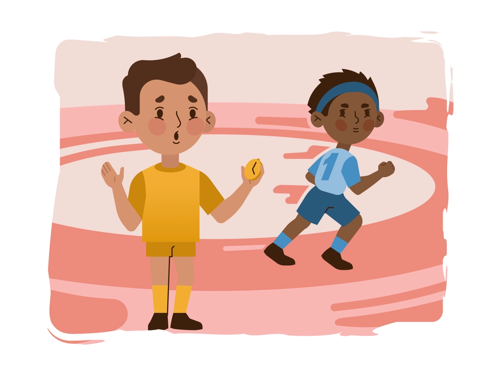

Tidak membandingkan Diri Sendiri

Tidak ada orang yang sempurna di dunia ini. Manusia diciptakan dengan
kelebihan dan kekurangannya masing-masing. Seperti diri kamu sendiri,
jika kamu memiliki kelemahan, secara alami kamu juga memiliki
kelebihan. Tapi terkadang kamu justru lebih fokus pada kelemahan diri
dan mengabaikan kekuatan atau kelebihanmu.
Salah satu alasan kamu tidak bisa bahagia adalah karena kamu sering
membandingkan hidup kamu dengan kehidupan orang lain. kamu tidak akan
berpikir membandingkan sesuatu dengan orang lain hanya akan
menyebabkan kekecewaan. Percayalah bahwa dengan semua kekurangan yang
terpikirkan olehmu, pasti ada banyak kelebihan yang bisa kamu
banggakan. Syukurilah hal-hal dalam hidupmu, mulai dari yang kecil
hingga yang besar, sehingga kamu akan merasa cukup atas semua itu.
Ketika kamu merasa dirimu dan hidupmu sudah cukup, kamu tidak akan
lagi membuang waktu dengan membandingkan diri dengan orang lain. Sikap
ini nyatanya juga bisa membuat kamu menjadi pribadi yang optimis dan
memiliki kesejahteraan dalam hidup. Tulislah segala pencapaian yang
telah kamu peroleh. Mulai dari pencapaian besar, seperti penghargaan
pegawai terbaik di kantor, hingga pencapaian-pencapaian kecil,
misalnya berhasil menggoreng ikan sendiri atau berhasil bangun lebih
pagi hari ini.
Kalau bisa, lakukan ini setiap pagi. Mencatat semua pencapaian yang
telah kamu raih akan membuat kamu lebih percaya diri dalam segala hal.
Kamu juga akan lebih menghargai dirimu sendiri sehingga tidak lagi
berpikir untuk membandingkan diri dengan orang lain.